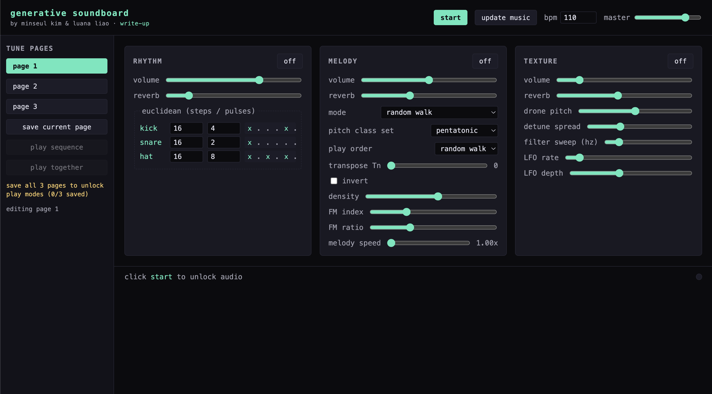

generative soundboard

1. Inspiration
What we wanted to build and why — a mini algorave in the browser, no sample packs, every sound synthesized live, every parameter a knob you can turn while the music plays. Mention strudel.cc as a touchstone and Brian Eno's "gardener" framing of generative music.
2. Constraints
What we deliberately limited ourselves to, and what limited us:
- Raw WebAudio API only — no audio libraries, no sample files.
- Musical coherence — three independent layers should agree harmonically without explicit choreography.
- Browser timing — JavaScript main-thread jitter would destroy rhythm without a lookahead scheduler.
3. Architecture
One AudioContext, one master gain, one clock. Each layer
is a class that subscribes to a per-step tick callback. Walk through:
- Shared
AudioContext+ master bus + reverb send - Lookahead scheduler — wake every 25 ms, queue events 100 ms ahead on WebAudio's sample-accurate clock
- Per-layer
RhythmLayer/MelodyLayer/TextureLayerclasses, each with their ownGainNodeand reverb control - Routing diagram: layer → gain → (master | reverb) → destination.
4. Layer design
rhythm
Three drum voices — kick, snare, hat — synthesized from oscillators
and filtered noise. Each voice has its own Euclidean pattern
generated by Bjorklund's algorithm: distribute k pulses
as evenly as possible across n steps. Patterns recompute
live as the user drags sliders.
melody
A pitch class set is the harmonic backbone — transposition and inversion mod 12 give us the active pitch pool. Two playback modes: a random walk through the pool, or a 16-cell elementary cellular automaton that evolves one generation per bar and fires notes from live cells. Every note is rendered with a small FM voice — sine modulating sine, modulation index decays over the note.
texture
Three sawtooth oscillators, slightly detuned, routed through a
low-pass filter whose cutoff is modulated by a slow LFO. The drone's
three voices snap to the melody's active pitch class set via
texture.setHarmony(pcset), so the layers can't help but
agree harmonically.
5. UI & performance features
- Staging updates — parameter changes are queued and applied on the next bar boundary so playback stays musical.
- Pending state — the "update music" button glows when there are unsubmitted changes; the status bar warns the user.
- 3-page tune sidebar — save up to three full-board snapshots and switch between them.
- Sequence vs. together modes — once all three pages are saved, play them in series (one per bar) or stacked simultaneously.
- CA visualization — when melody is in CA mode, recent generations of the cellular automaton render below the board, with the current step highlighted.
6. Results & future work
What sounds good now
- Harmony snapping helps to keep the drone and melody in agreement
- CA-driven melody produces patterns that feel less random
- Lookahead scheduler keeps timing tight even with the page tabbed in/out.
What we'd improve next
- Per-step probability or velocity envelopes for the drum voices.
- More CA rules / 2D CA / multiple readouts from the same automaton.
- A proper effects chain — delay, stereo widener, sidechain duck on the kick.
- Export — record a session to WAV from the master bus.
- MIDI-in so external controllers can drive the knobs.